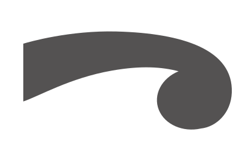

9
You walk west admiring the enviroment. A light breeze rustles through the patches of grass. A few short trees dot the landscape, but as you move farther west, they become more numerous and larger. Eventually they shade your path and traveling slows down. Beams of light break through the canopy and dance along the ground.
There are other changes among the trees as well. They begin to gain an almost liquid appearance. You move closer to one of the trees and gently lay your hand on the surface expecting it part like water. Instead you feel just a solid mass. You press harder against the hard surface. It is as solid as rock.
Alfred does a deeper scan of the tree you are pressing against, “It appears to not be completely organic. I am picking up small traces of nanobots intertwined within the fibers of the tree.” Data from Alfred’s scans feed to your visor. You continue to walk as Alfred continues to scan the trees and relaying the information.Then you stop.
Before you a clearing opens up with a lone tree in the center. It isn’t natural though. It stretches twice as high as any other tree, is five times the diameter of the other trees, and it is shifting. It twists and curls around in the strangest patterns, never resting. The surface of the tree is like oil upon water as it reflects a rainbow of colors.
As you watch a door forms with stairs traveling upward before it vanishes again. Another then appears a short distance from the first with stairs traveling downward before vanishing. The doors continue to appear in an alternating fashion.
This is the source of the power I was reading Dave
You move closer to admire the living structure. Then you her rustling from behind you in the woods. Life. You then turn towards the structure again. You can't inspect all of it right now. You have to choose what to inspect first.